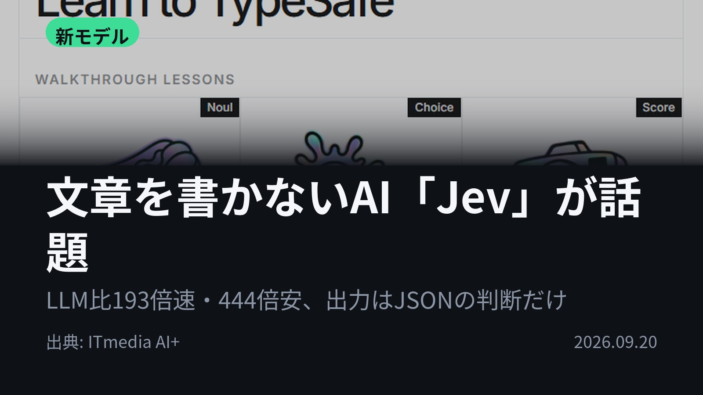
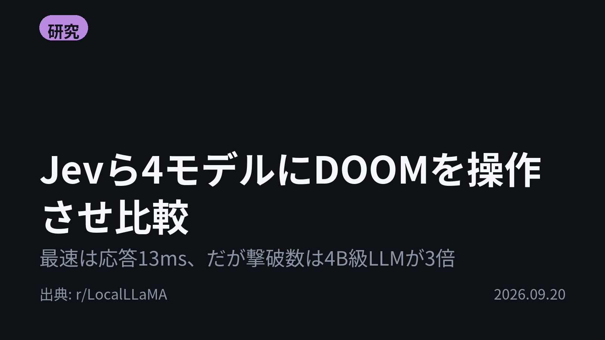
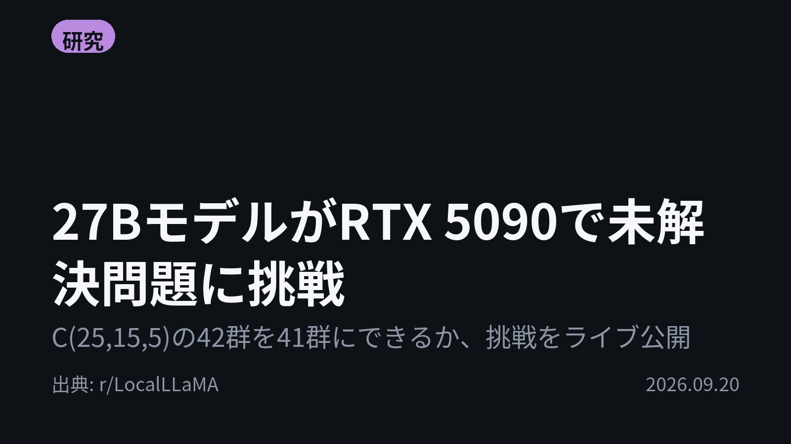
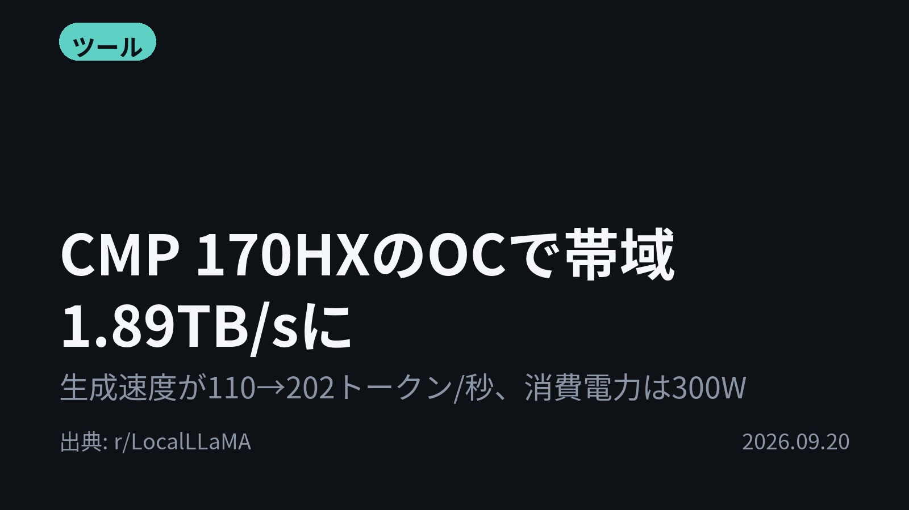
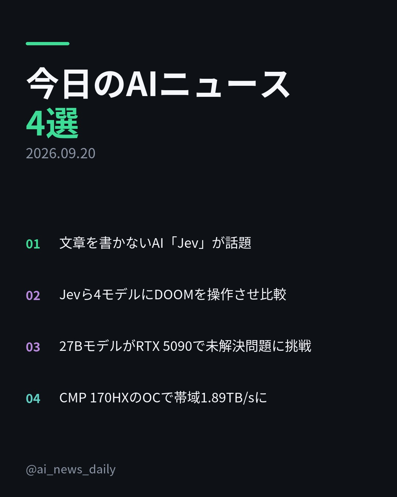
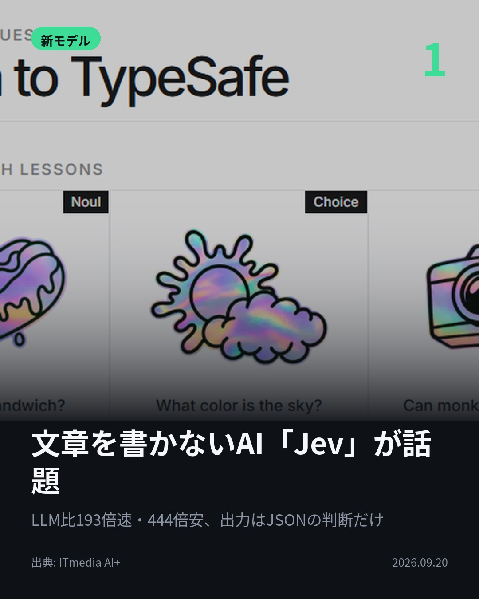
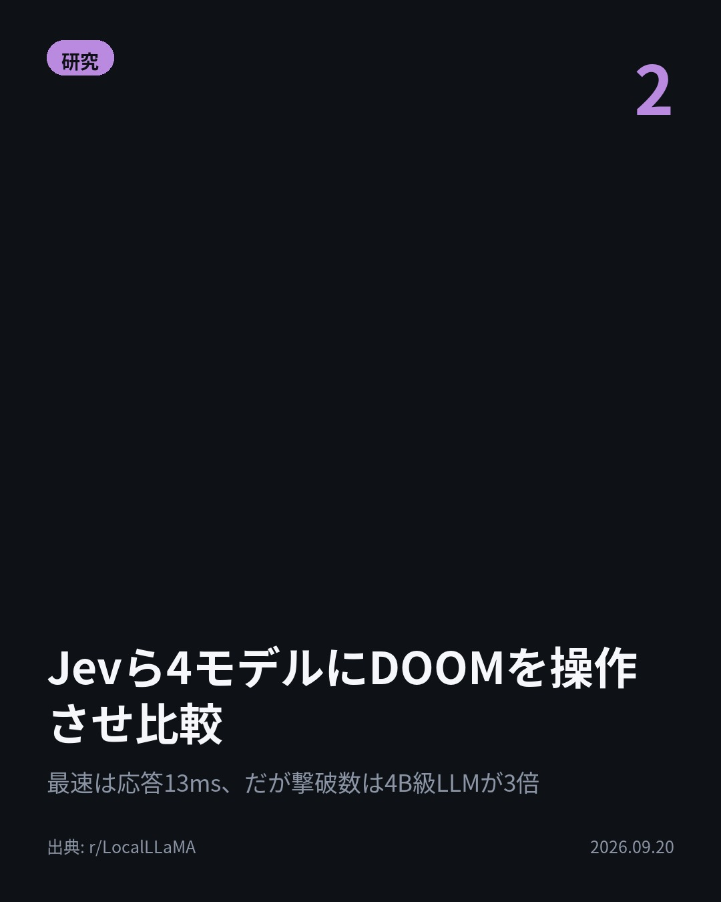
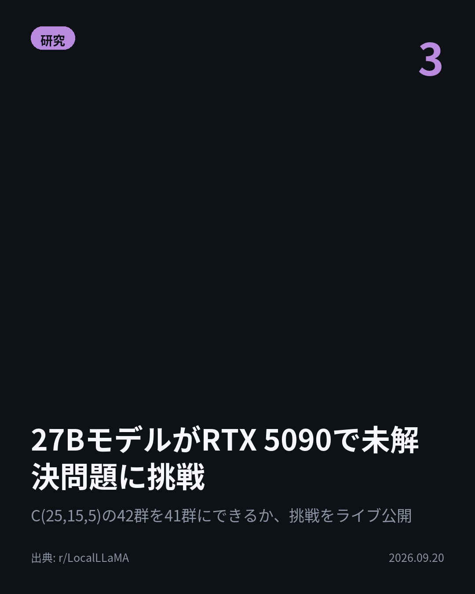
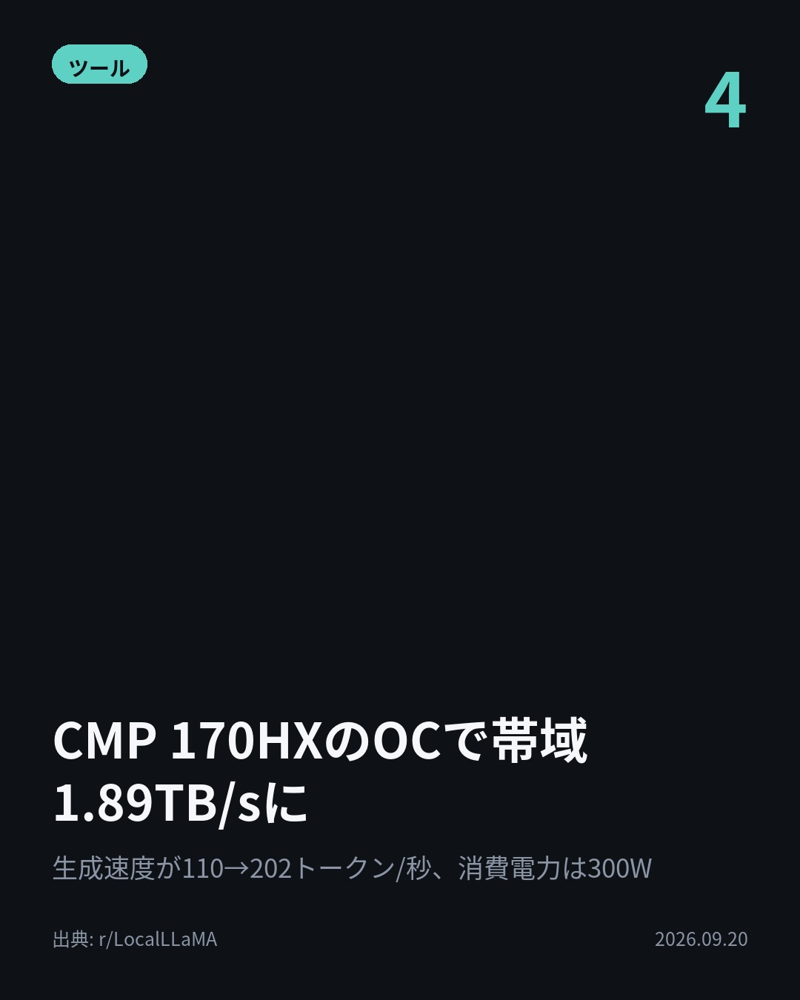

今日のAIニュース 下書き
2026-09-20 生成 09/20 23:55
⚠ ファクト照合で要確認の項目があります。
各ニュースの警告を確認してから投稿してください。
X（4投稿）
文章を書かないAI「Jev」が話題
原題: 「Jev」とは “文章を書かないAI”がなぜ話題に？ 元OpenAI研究者が開発、「“スマートなif文”と考えてみて」

文章を書かないAIが、LLMより193.6倍速い。 元OpenAI研究者が作った「Jev」は会話せず、判断だけをJSONで返す。 開発元の自社評価で、フロンティアLLM比444.6倍安い。確信度が低い分は人間に回せる。 #AI #Jev（出典: ITmedia AI+）
重み 215 / 280（見た目 132字）
{kind=link}
Jevら4モデルにDOOMを操作させ比較
原題: I gave Jev, Laya, finetuned ModernCE and Qwen3.5 the controls to Doom

応答7.6msのModernCEより、146.8msのQwen3.5-4Bが約3倍多く倒した。 DOOMを4モデルに操作させる比較。平均撃破数はQwen3.5-4Bが3.63、Jevは1.13。8シードの平均。 #AI #DOOM（出典: r/LocalLLaMA）
重み 183 / 280（見た目 131字）
要確認:
［固有名詞］LocalLLaMA — この語が本文に見つかりません
{kind=link}
27BモデルがRTX 5090で未解決問題に挑戦
原題: Qwen 3.8 27B Running LIVE on a RTX 5090 to solve an Open Math Problem - Covering Design C(25,15,5)

42群が最良とされる問題を、41群に減らせるか。 Qwen 3.8 27BをRTX 5090で動かし、未解決の被覆設計C(25,15,5)に挑ませている。 解の正否は独立チェッカーが即時判定。過程はライブ公開中。 #AI #Qwen（出典: r/LocalLLaMA）
重み 208 / 280（見た目 131字）
要確認:
［数値］5090 — この数値の根拠が本文に見つかりません
［固有名詞］チェッカー — この語が本文に見つかりません
［固有名詞］メッセージ — この語が本文に見つかりません
［固有名詞］リーマン — この語が本文に見つかりません
{kind=link}
CMP 170HXのOCで帯域1.89TB/sに
原題: Reached 1.89 TB/s memory bandwidth overclocking the CMP 170hx

オーバークロックだけで、このGPUはまだ速くなる。 CMP 170HXのメモリ帯域が1386.2→1890.1GB/s、36.4%向上。 Qwen 3.8 27Bの生成は110→202トークン/秒。消費電力は300W。 #AI #GPU（出典: r/LocalLLaMA）
重み 191 / 280（見た目 133字）
要確認:
［固有名詞］オーバークロック — この語が本文に見つかりません
［固有名詞］トークン — この語が本文に見つかりません
［固有名詞］LocalLLaMA — この語が本文に見つかりません
{kind=link}
Instagram（カルーセル 6枚）
{kind=link}

1. 表紙
{kind=link}

2. ニュース
{kind=link}

3. ニュース
{kind=link}

4. ニュース
{kind=link}

5. ニュース

6. CTA
文章を書かないAIが、LLMより193.6倍速い。 一方、DOOMを操作させた検証では、応答146.8msのQwen3.5-4Bが撃破数トップでした。 1. 米TypeSafe AIの「Jev」は、選択肢・数値・はい/いいえの3種類の質問にだけ答えるAI。文章は作らず、答えを確率と確信度付きのJSONで返します。 同社の説明は「スマートなif文だと考えてほしい」。確信度が足りない判断だけをLLMや人間に回す、という場合分けができます。 創業者は元OpenAI研究者で、InstructGPT論文の共著者。発表はXで3700万回以上表示されました。(ITmedia AI+) 2. DOOMの操作を4モデルに任せた比較。ViZDoomの画面情報を文章にして渡し、毎秒5回、左右・発射・前進から1つを選ばせます。 8シード平均の撃破数は、finetuneしたQwen3.5-4Bが3.63で最多。応答7.6msのModernCEと16.2msのLayaは1.25、Jevは1.13。 生存時間もJevの5.63秒に対し、他3モデルは11秒台でした。(r/LocalLLaMA) 3. 被覆設計「C(25,15,5)」は、現在の最良解が42群。これを41群にできるかという未解決問題に、RTX 5090で動くQwen 3.8 27Bが自律的に挑んでいます。 公開サイトではAIのメッセージや記憶、コードが見られ、独立したチェッカーが解の正否を即座に判定します。 投稿者は以前、同じモデルをリーマン予想に63時間走らせていました。(r/LocalLLaMA) 4. CMP 170HX 40GBをオーバークロックしたところ、メモリ帯域が1386.2GB/sから1890.1GB/sへ36.4%向上。 設定は他に何も変えず、Qwen 3.8 27Bの生成速度は110→202トークン/秒に。消費電力は300Wで、GPU温度はむしろ少し下がったとのこと。 投稿者は「このカードの潜在性能は大幅に削られている」と書いています。(r/LocalLLaMA) 5. 速さの数字と、実際にできたことの数字。今日の4本は、どちらも並べて確かめられる形で出ていました。 毎朝4本、AIニュースをまとめています。あとで読み返したい方は保存、明日も受け取りたい方はフォローをどうぞ。 #AI #生成AI #人工知能 #テクノロジー #AIニュース #LLM #ローカルLLM #オープンソースAI #AI活用 #機械学習 #AIモデル #Jev #TypeSafeAI #Qwen #DOOM #GPU #RTX5090 #オーバークロック #AInews #MachineLearning #LocalLLaMA #TechNews
1163字（Instagram上限 2,200字）
この日の選定理由
文章を書かないAI「Jev」が話題
「会話するAI」以外の用途、つまり大量の判断処理をAIに任せる領域が新市場として立ち上がる可能性を示す。確信度付き出力はLLMと人間への振り分け設計を変える。
Jevら4モデルにDOOMを操作させ比較
話題の高速判断モデルを実タスクで横並び比較した数少ない検証。速さと判断の質は別物だと具体的な数値で示している。
27BモデルがRTX 5090で未解決問題に挑戦
消費者向けGPUで動く小型オープンモデルが数学の未解決問題に自律挑戦する様子を検証可能な形で公開しており、自律研究の実力を第三者が判定できる。
CMP 170HXのOCで帯域1.89TB/sに
マイニング用途の廃棄カードが設定変更だけで倍近い性能を出す。ハードの潜在性能が出荷設定で抑えられている実例。